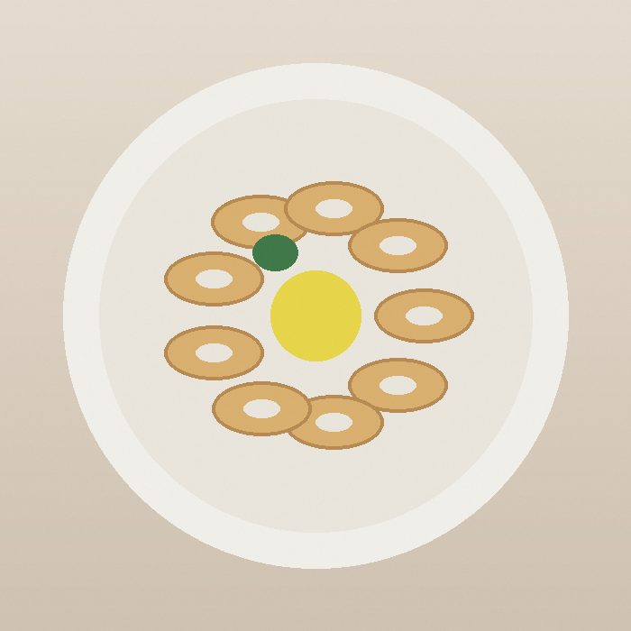
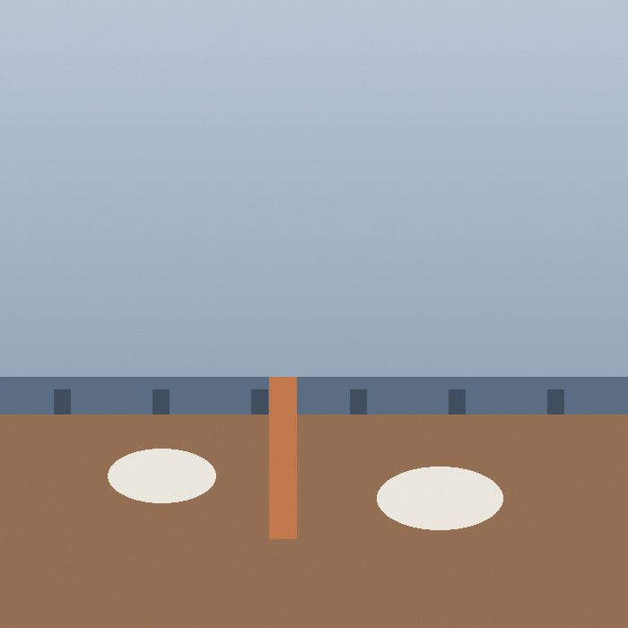
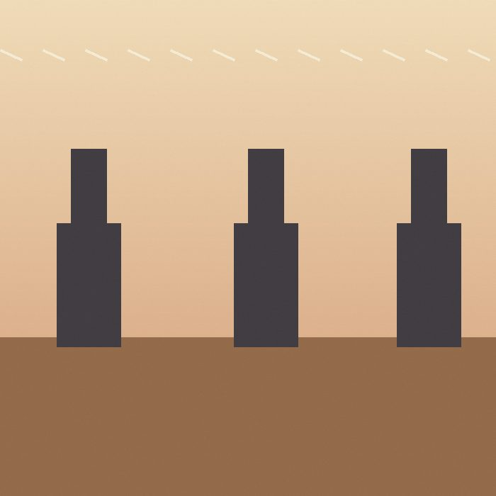

Life / Culture / Restaurant sample entry Fictional place
Küçük Liman
A meyhane on the Kadıköy waterfront where the calamari came out in six minutes and everything else took its time.
Rating 4/5
- Cuisine
- Meyhane, seafood and meze
- Area
- Kadıköy, Istanbul
- Price
- ₺₺₺ (three of four)
- Visited
- 30 October 2026
- Went with
- Two adults
- Booking
- [Reservation link or phone number]
What we ordered
Five plates, one verdict each.
- Grilled calamariThe best plate of the night. Six minutes from order to table, charred edges, still tender.
- HaydariThick, garlicky, a little too cold. Fine with bread, forgettable without it.
- Fava with dillSmooth and lightly sweet. Good olive oil, and they were not shy with it.
- Sea bass, grilledCooked properly, skin crisp. Needed more lemon and salt than the kitchen gave it.
- Quince dessertToo sweet for me after the fish, but the clotted cream balanced it.
Service was slow. Water took fifteen minutes, the bill took twenty.
The verdict
Küçük Liman is a place to sit for three hours, not for a quick dinner. The table by the window looks across the water to the ferry lights, and that view does more for the evening than any single dish. The food is honest and mostly well cooked, the calamari is worth the trip on its own, and the slow service stops being a problem once you accept the pace. The walk home along the shore afterwards is part of the experience, and I would not skip it.
Would I go again?
Yes, on a weekday, when the kitchen is not rushed.
Photographs
Illustrative images for layout, not photos of the real place.

Grilled calamari, the plate of the night.

The view from the window table, ferry lights across the water.

The terrace, set with small tables close to the shore.
Practical notes
- Opening hours: [opening hours].
- Price per person: [price per person, with drinks].
- Ask for a window table when booking; the terrace fills first on weekends.
- Nearest ferry and metro stop: [nearest stop]. The walk from the pier is about [minutes] minutes.